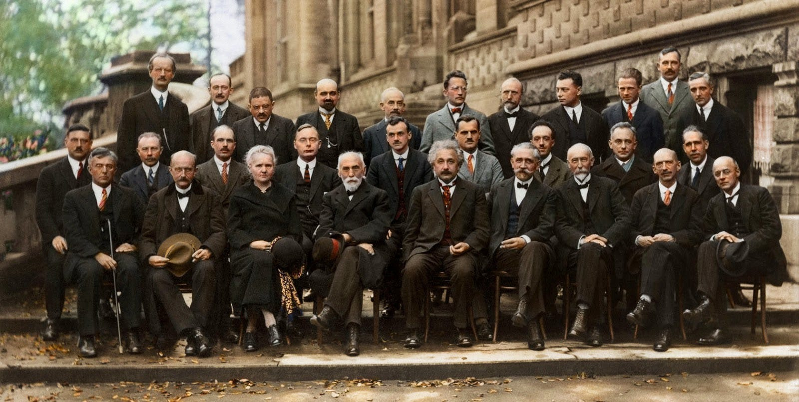
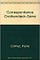

A peculiar scientific link to study
An exercise for data scientists and math enthusiasts

When there are more connections between people, we have more opportunities and ways for communicating ideas and thoughts what in turn will fuel creativity and the spread of information that will lead to innovations and progress. Early studies have already shown how the conference of Solvay which allowed these 29 scientists to meet had impacted the progress of the scientific field leading to many proven theorems and new theories.

After this conference, each of them went to his or her (Why Emmy Noether is not here) basement but they continued communicating through mail letters what helped each of them benefit from the ideas of others.
It is a very interesting project and exercise to study and measure exactly the impact of communication between scientists in the scientific field and I think this same idea can be done with the journalistic field. As a base example of such communications between scientists mainly mathematicians, you have this book

This is book is all about the correspondence between Jean-Pierre Serre and Alexander Grothendieck. By studying this particular link (this book ) of this graph of interconnected mathematicians you can see how Serre and Grothendieck have been mutually influenced themselves. Of course, it will help to be familiar with the field of study of each of them. I don't know if you are, in my case I am trying to dive again into the theory of groups and think this will be useful for such kind of exercise.
Books are valuable containers of data that can fuel important studies and exercises this one I described in this article is one of them. It also shows how this new genre of data-driven book that Book Dojo is creating and offering to book lovers and book communities is a market extending genre because there are a lot of normal books out there that can be turned into data-driven books like this one of Serre-Grothendieck for who loves books and mathematics.
Connections between people are for sure fuel for creativity and progress but we should do all we can to cut out the noise that can pollute the information that travels through these connections. This noise now a day is ads, spam, and scams.
Book Dojo as a mail-only startup is against scams and spam. f you Need to onboard yourself into Book Dojo here it is.